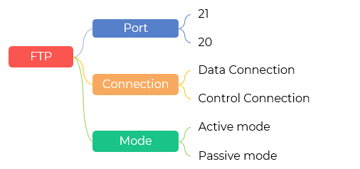
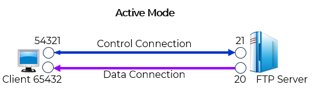
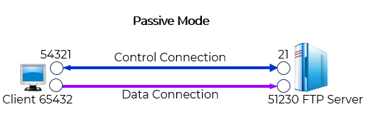
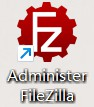
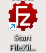
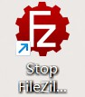
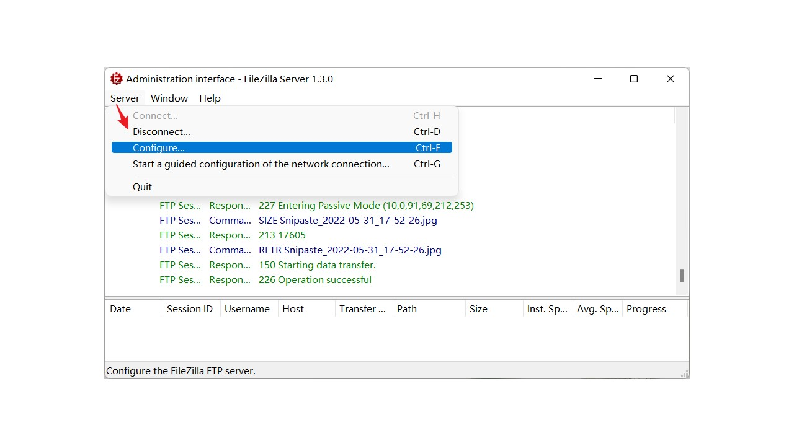
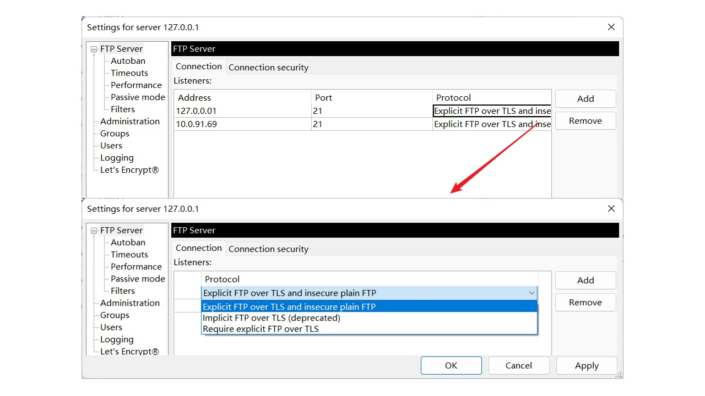
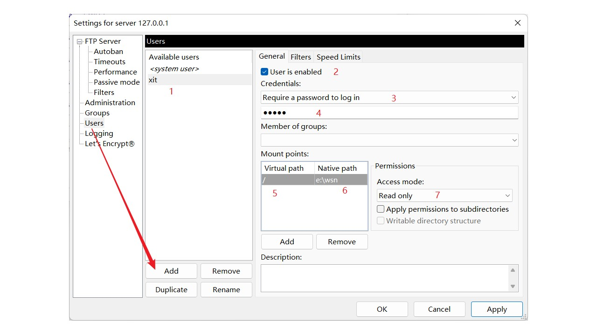
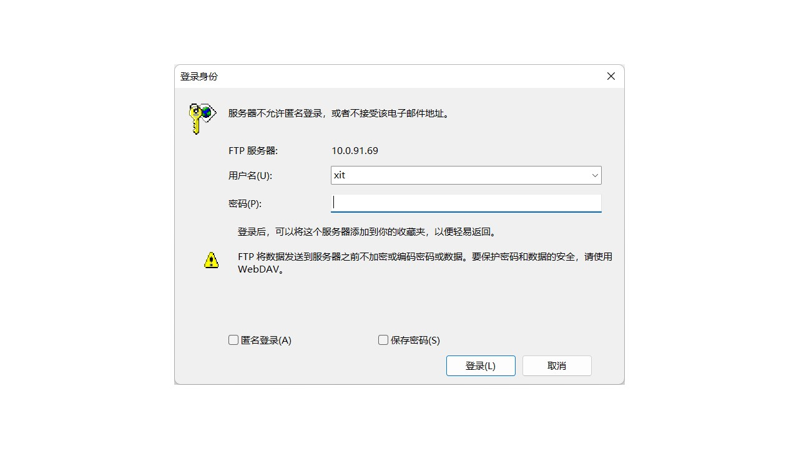

下载 Download：从远程主机拷贝文件至自己的计算机上
上传 Upload：将文件从自己的计算机中拷贝至远程主机上
一个 FTP 服务器进程可同时为多个客户进程提供服务
发送控制信息，例如用户身份验证（用户名和密码）、更改远程目录的命令、检索和存储文件的命令等
使用端口 21
传输实际的文件内容
使用端口 20
控制连接：客户端 65432 端口 → 服务器 21 端口（客户端发起）
PORT ip,port
数据连接：服务器 20 端口 → 客户端 65432 端口（服务器主动连接客户端指定端口）
文件开始传输
一个客户端端口 → 2个服务器端口21/20，是不是一对多通信
数据连接由服务器发起
服务器使用固定端口 20
不适合防火墙/NAT 后的客户端（因服务器无法穿透防火墙）

控制连接：客户端 54321 端口 → 服务器 21 端口（客户端发起）
数据连接：客户端 → 服务器随机高端口 51230（客户端主动连接服务器）
PASV
文件开始传输
所有连接均由客户端发起
服务器使用随机高编号端口（>1023）
适合防火墙/NAT后的客户端







